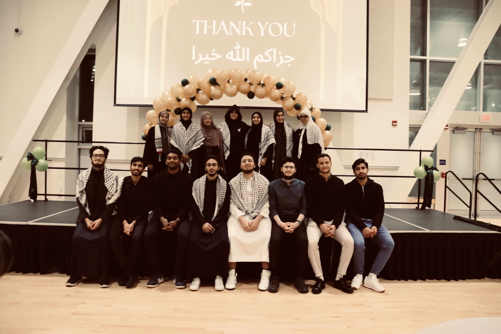

Statistics student at UBC focused on data analytics, statistical learning,
and applied research. I use statistical modeling, machine learning, and
visualization to turn complex data into actionable insights.
Open to opportunities
Indonesia Maju ScholarNational merit-based scholarship
1st Place · DataQuestCompetitive data science
Dean's List · 2023W–2025WUniversity of British Columbia
Building a strong foundation in statistical theory, computation, and applied data science.
I'm Firila, a Statistics student at the
University of British Columbia with a thematic
concentration in Computer Science and a minor in Data Science.
My interests sit at the intersection of statistical modeling,
machine learning, data analytics, and computational methods. I enjoy
working with real-world data to understand patterns, build predictive
models, and communicate quantitative findings clearly.
I am particularly interested in applying statistical methods to
problems involving forecasting, uncertainty, and data-driven
decision-making.
National Research and Innovation Agency of Indonesia (BRIN)
Contributed to applied research through data analysis and statistical
methods, working with research data to investigate real-world questions
in a multidisciplinary research environment.
Applied statistical methods to research datasets
Supported reproducible analysis workflows
Worked with data-driven research questions
Conference PresenterRSS · UK
Poster Presenter
Royal Statistical Society (RSS)
Presented research on the forecastability of Indonesian food commodity
prices, examining how statistical and machine learning methods can
explain differences in price predictability across major commodities.
Presented research at the Royal Statistical Society conference
Applied ARIMA and XGBoost to Indonesian food price data
Communicated statistical findings through a research poster
03 · Technical Portfolio
Selected Projects
Selected work spanning statistical modeling, machine learning,
forecasting, and data analytics.
Independent end-to-end forecasting and analytics project for
Canadian retail food prices across 10 provinces. Uses LightGBM
Quantile Regression to generate probabilistic forecasts and
communicate uncertainty through an interactive Tableau dashboard.
Technologies
PythonLightGBMQuantile RegressionSQLiteTableau
Highlights
Forecasted retail food prices across 10 Canadian provinces
Generated P10/P50/P90 forecasts for August 2026 – July 2027
Built interactive visualizations for forecast uncertainty and price volatility
Monte Carlo Simulation of Cash Waqf-Linked Sukuk
Journal Publication
Research evaluating the financial sustainability of using
Cash Waqf-Linked Sukuk (CWLS) to support Indonesia's
Makanan Bergizi Gratis (MBG) program under uncertain sukuk
yields and food inflation.
Technologies
RMonte Carlo SimulationStatistical ModelingData Visualization
Highlights
Ran 10,000 Monte Carlo iterations over a 10-year horizon
Modeled uncertainty in sukuk yields and food inflation
Estimated sustainable MBG coverage across alternative funding scenarios
Applied natural language processing to classify sentiment
from social media text, transforming unstructured tweets
into structured insights for audience and brand analysis.
Technologies
PythonNLPLogistic Regression
Highlights
Processed and transformed social media text data
Built sentiment classification models
Visualized sentiment patterns and trends
No projects match your search. Try a different keyword or filter.
04 · Leadership & Design
Leadership & creative work
Contributing through communication, design, and collaborative work alongside my technical studies.
01
Muslim Students Association (MSA) · UBC
Marketing Director
Student Organization
Supported MSA's marketing and outreach through event promotion,
social media, and visual communication.
Focus
MarketingCommunicationEvent PromotionTeamwork
Selected Work

02
Association for Women in Mathematics (AWM) · UBC
UI/UX Designer
Women in STEM
Designed digital and visual materials for AWM UBC, supporting
website, event, and communication initiatives.
Mock Interview Mentor · PPI DuniaStudent mentoring and interview preparation
Media Assistant · IDRFInternational Development and Relief Foundation
Volunteer · Semangat MudaYouth and community initiatives
Recognition
Honors & achievements
Selected academic and competition achievements beyond my core research and projects.
Data Science2025 · Finalist
ASA DataFest
Finalist in the American Statistical Association's annual data
analysis competition, working with a team to extract insights from
a complex real-world dataset.
UBC Recognition2023
Outstanding International Student Award
Recipient of the International Student Initiative UBC
International Entrance Awards.
Academic Competitions2019–2024
Mathematics & Academic Competitions
Selected placements and medals in regional, national, and
international mathematics and academic competitions.

.png)